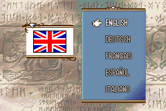

Fire Emblem - The Sacred Stones (Europe) (En,Fr,De,Es,It)
Stateless / Passcode
Cartridge Identity
- Game Code
BE8P(FamilyBE8)- Header Title
FIREEMBLEM2P- Maker / Revision
01/ rev0- ROM Size
- 32.0 MiB (33,554,432 B)
- Save Media
None / Unknown- SHA-256
80f94bf10da412e6d8d1ba11c043107f4873bc17fecceb02e6a7da3d1a261d6d
Screenshots


Cartridge Storage Architecture: Stateless / Passcode
Zero non-volatile battery hardware: This cartridge PCB contains ROM only (no SRAM, Flash, or EEPROM chips). Progression is preserved via on-screen passcodes or session-only gameplay. No
.sav file is generated or required.
Regional Variants & Revisions (Family BE8)
- Fire Emblem - Seima no Kouseki (Japan) (
BE8J, 16 MiB) - Fire Emblem - Seima no Kouseki (Japan) (Virtual Console) (
BE8J, 16 MiB) - Fire Emblem - The Sacred Stones (Europe) (En,Fr,De,Es,It) (Virtual Console) (
BE8P, 32 MiB) - Fire Emblem - The Sacred Stones (USA) (Virtual Console) (
BE8E, 16 MiB) - Fire Emblem - The Sacred Stones (USA, Australia) (
BE8E, 16 MiB)